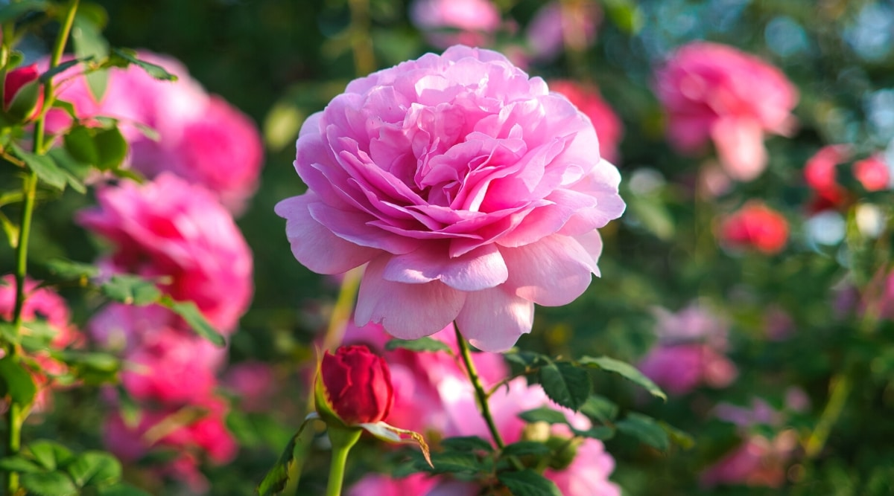
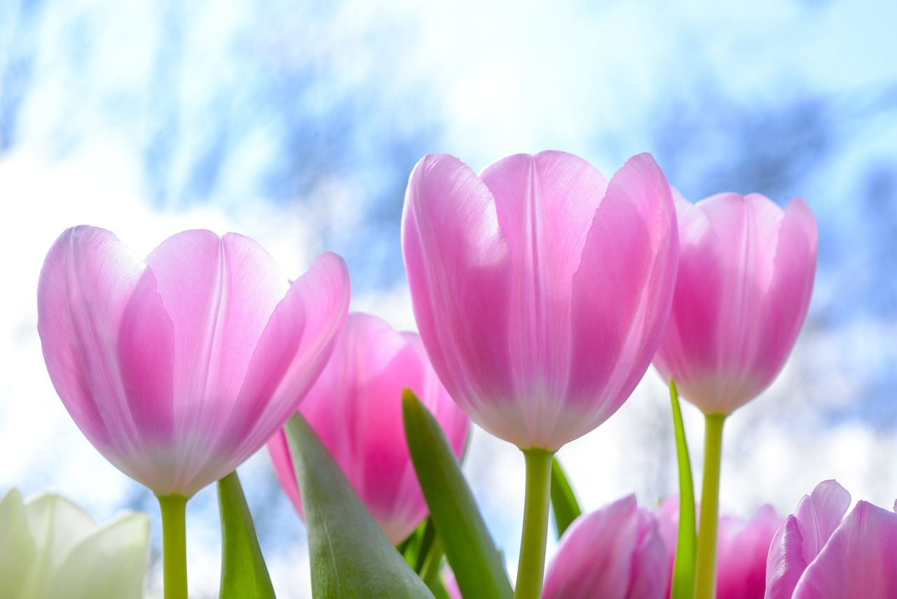
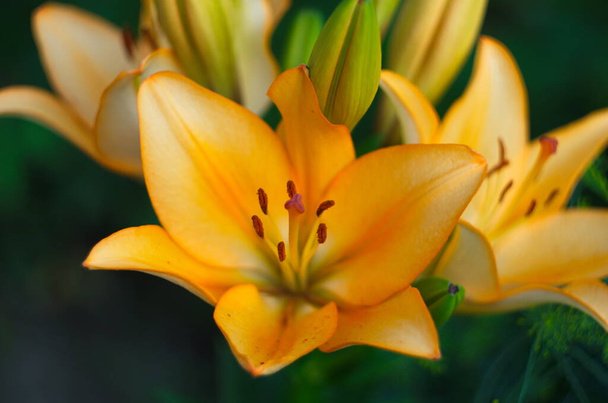
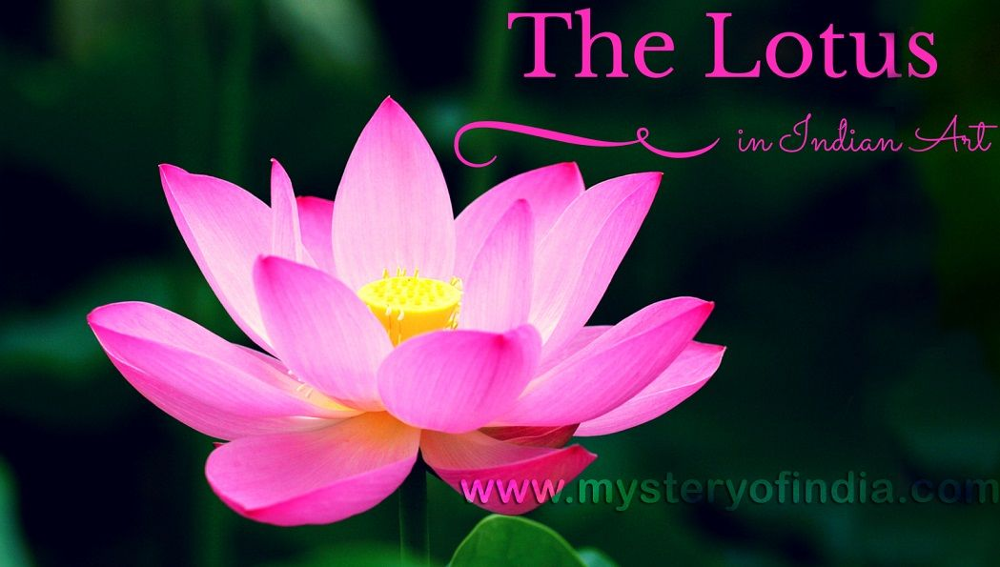
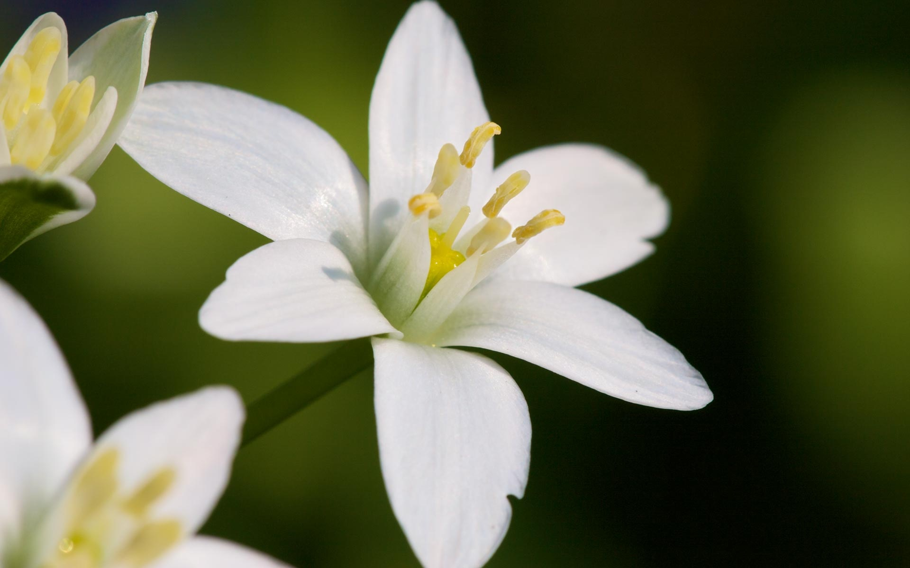
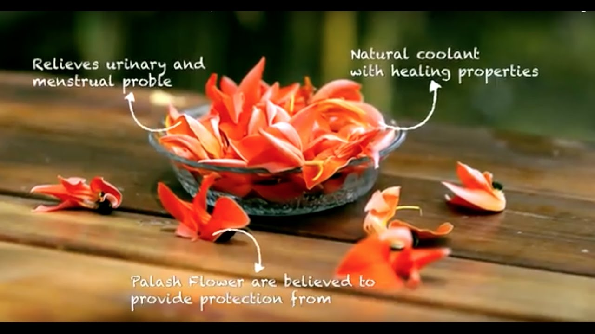

Roses (Rosa): Roses are perhaps the most well-known and beloved flowers.
They come in various colors, each with its own symbolism. Red roses symbolize
love and passion, while yellow roses represent friendship.
White roses often stand for purity and innocence.
🌹 Want To Know More About It
 Tulips (Tulipa): Tulips are known for their vibrant colors and distinct cup-shaped blooms.
They are associated with perfect love and are available in a wide range of colors,
making them a popular choice for gardens and floral arrangements.
🌷 Want To Know More About It

` 🌸 Lilies (Lilium): Lilies are elegant and fragrant flowers that come in various shapes and colors.
The white lily symbolizes purity and virtue, while the orange lily represents passion.
Lilies are often used in religious ceremonies and events.

Sunflowers (Helianthus annuus): Sunflowers are known for their large, cheerful blooms that resemble the sun.
They symbolize adoration, loyalty, and longevity. Sunflowers are also popular for their seeds,
which are enjoyed as snacks and used in cooking.
🌻 Want To Know More About It Lotus (Nelumbo nucifera):The lotus is one of India's most iconic flowers, symbolizing purity and
spirituality in various cultures. It grows in muddy waters and has deep cultural
significance in Hinduism and Buddhism.
Uses of Lotus :offerings in religious rituals.Decoration of ponds, water bodies,
and temples. piritual and cultural significance in Hinduism and Buddhism. Want To Know More About It

🍂 Jasmine (Jasminum spp.): Jasmine is renowned for its sweet fragrance and delicate white blossoms.
It is often used in making garlands and is a symbol of love and purity.
Jasmine is also the national flower of Pakistan.Want To Know More About It

🍂 Palash (Butea monosperma):Palash, also called the flame of the forest,
bears bright red or orange blossoms and is associated with the arrival of spring.
Its flowers are used to make traditional Holi colors. Benifits:-Symbol of the arrival of spring.
Traditional Holi colors made from its flowers.Not commonly used for religious offerings.
Palash flowers may be used to help with gout, and skin ailments. They are known to have astringent,
diuretic, and tonic properties. Palash stem bark might be used in traditional medicine
system to treat dyspepsia, diarrhoea, ulcers, sore throat, and snakebite.Want To Know More About It

IMFORMATION OF FLOWERS
Name of flower
color of flower
Benefits
Hibiscus
It is available in multipal colors
Traditional medicine for hair and skin care.
Neelakurinji
is avaliable in a purple
Special occurrence every 12 years in the Western Ghats.


 Jump to Palash
Jump to Palash